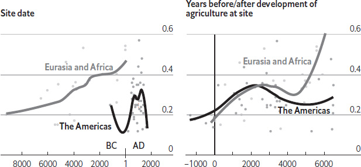
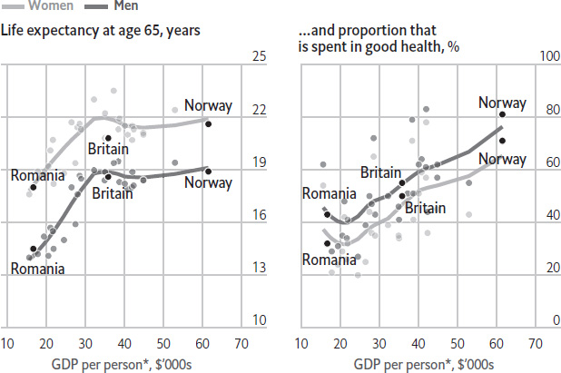
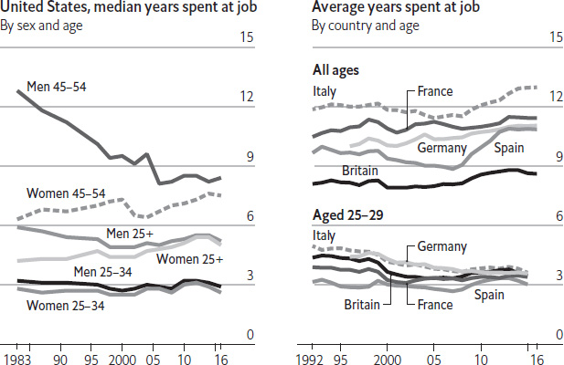
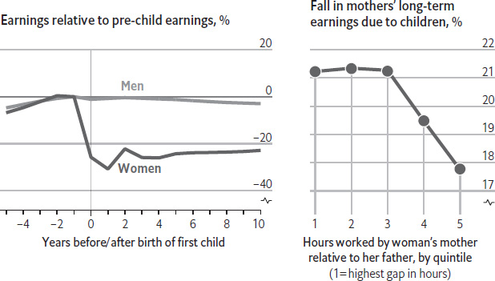

Americans are admirably optimistic about their ability to shape their own future. One survey found that nearly three-quarters of Americans thought hard work was a “very important” component of success, while just 62% put it down to a good education and less than a fifth to inherited wealth. But the United States ranks poorly compared with other advanced economies when it comes to income inequality and social mobility. So what must an ambitious young American do to get rich?
A new study by Raj Chetty of Stanford University and a collective of other economists helps answer this question. By matching data from the Department of Education with 30m tax returns, Mr Chetty and his colleagues have constructed a data set that reveals to researchers both the income distributions of graduates of particular colleges, and how incomes vary depending on how rich the graduates’ parents were. The data show that attending an elite college is a good way of securing an upper-middle-class lifestyle: graduates of Ivy League-calibre universities have roughly the same chance of breaking into the top 20% of the income distribution, regardless of family background. Paths to the upper-middle class exist for those who graduate from lesser-known universities too, because earnings depend even more on what one studies than where. On average, graduates of lesser-known engineering colleges such as Kettering University and the Stevens Institute of Technology do just as well as those from the Ivy League.
But a good education alone cannot propel the merely upper-middle class into the ranks of the rich. Few engineers, nurses or pharmacists make it to the top 1%, which is dominated by bankers and other financiers. Recruiters in the financial industry place high premiums on pedigree. Here the Ivies play an outsize role; graduates of elite private universities such as Harvard and Yale are much more likely to end up on Wall Street. Moreover, data from Mr Chetty and colleagues show that it helps to start off rich in the first place.
This trend is even more pronounced at the very top of the income distribution. Between 1999 and 2004, just 2% of Princetonians came from the families in the lowest 20% of earnings, while 3.2% came from families in the top 0.1%. The admissions process at top colleges is sometimes further skewed by the preferential treatment given to family members of alumni. When the researchers looked at Harvard’s most recently admitted class, they found that 27% had a relative who also went to that “college near Boston”. This suggests that the simplest way to become extremely rich is by being born to rich parents. The second-easiest way is to find a rich spouse. If neither approach works, you could try to get into a top college – but remember that not all Princetonians become plutocrats.
Payroll clerks across Britain have been busier than usual. New rules mean that, as of April 2018, all large employers are required to publish annual data on the gap in pay between their male and female workers. In America, by contrast, President Donald Trump halted a similar rule that would have taken effect the same year. Such requirements are meant to energise efforts towards equal pay for men and women. The data suggest that a new approach is needed. In the OECD, a club of mostly rich countries, median wages for women working full time are 85% of those for men. Why do women still earn so much less?
Contrary to popular belief, it is not because employers pay women less than men for doing the same jobs. According to data from 25 countries, gathered by Korn Ferry, a consultancy, women earn 98% of the wages of men who are in the same roles at the same employers. Instead, the gap arises because women outnumber men in lower-paid jobs, such as secretarial and administrative roles, whereas men predominate in senior positions. That means that in a typical company, average male pay is higher than average female pay. Women also cluster in occupations and industries that pay lower salaries overall. Primary-school teachers in the OECD, for example, earn nearly 20% less than the average for university graduates. In the European Union nearly 70% of working women are in occupations where at least 60% of employees are female. In America, the four jobs done by the biggest numbers of women – teacher, nurse, secretary and health-care assistant – are all at least 80% female.
The main reason why women are less likely than men to reach higher-level positions is that they are their children’s primary carers. In eight countries polled by The Economist and YouGov in 2017, between 44% and 75% of women with children living at home said they had scaled back at work after becoming mothers – either by working fewer hours or by switching to a less demanding job, such as one requiring less travel or overtime. Only 13–37% of fathers said they had done so, and more than half of those men said their partner had also scaled back. This pattern means that men get a better shot at a pay rise or a promotion than their female colleagues, and are less likely to work in jobs for which they are overqualified. One study estimated that in America, women’s future wages fall, on average, by 4% per child, and by 10% per child in the case of the highest-earning, most skilled white women. In Britain, a mother’s wages fall by 2% for each year she is out of the workforce, and by twice as much if she has good school-leaving qualifications.
Women’s lower salaries mean that they often fall into poverty when they divorce or are widowed. Lack of financial independence prevents some from leaving abusive partners. Policies and workplace norms that make it easier for men to split parental duties equally with their partners can help. Parents, for their part, need to instil in their children the idea that they can be anything – and not only if they are girls. Gender equality will remain elusive until boys are as excited as girls about becoming teachers, nurses and full-time parents.
In May 2017 Xi Jinping welcomed 28 heads of state and government to Beijing for a coming-out party to celebrate the “belt and road” initiative, his most ambitious foreign-policy project. Launched in 2013 as “one belt, one road”, it involves China underwriting billions of dollars of infrastructure investment in countries along the old Silk Road linking it with Europe. The ambition is immense. China is spending roughly $150bn a year in the 68 countries that have signed up to the scheme. The summit meeting (called a forum) attracted the largest number of foreign dignitaries to Beijing since the Olympic Games in 2008. Yet few European leaders showed up. For the most part they have ignored the implications of China’s initiative. What are those implications, and is the West right to be sanguine?
The project is the clearest expression so far of Mr Xi’s determination to break with Deng Xiaoping’s dictum to “hide our capabilities and bide our time; never try to take the lead”. The Belt and Road Forum (with its unfortunate acronym, BARF) was the second set-piece event in 2017 at which Mr Xi laid out China’s claim to global leadership. (The first was a speech against protectionism made at the World Economic Forum in Davos in January.) In 2014, Wang Yi, the foreign minister, said the initiative was the most important component of Mr Xi’s foreign policy. Its ultimate aim is to make Eurasia (dominated by China) an economic and trading area to rival the transatlantic one (dominated by America).
Behind this broad strategic imperative lies a plethora of secondary motivations – the number and variety of which prompt Western scepticism about the coherence and practicality of the project. By investing in infrastructure, Mr Xi hopes to find a more profitable home for China’s vast foreign-exchange reserves, most of which are in low-interest-bearing American government securities. He also hopes to create new markets for Chinese companies, such as high-speed rail firms, and to export some of his country’s vast excess capacity in cement, steel and other metals. By investing in volatile countries in central Asia, he reckons he can create a more stable neighbourhood for China’s own restive western provinces of Xinjiang and Tibet. And by encouraging more Chinese projects around the South China Sea, the initiative could bolster China’s claims in that area (the “road” in “belt and road” refers to sea lanes). Yet some of these ambitions contradict others: is a dodgy project in central Asia a better place to invest than American government securities? And with different motivations go conflicting interests. There is infighting between the most important Chinese institutions involved, including the ministry of commerce, the foreign ministry, the planning commission and China’s provinces. To make matters worse, China is finding it hard to identify profitable projects in many belt-and-road countries (business people in China call it “One Road, One Trap”). To cap it all, China is facing a backlash against some of its plans, with elected governments in Sri Lanka and Myanmar repudiating or seeking to renegotiate projects approved by their authoritarian predecessors.
That may seem to justify Europeans’ decision to stay away. But the suspicion that the project will fail could be misguided. Mr Xi needs the initiative because he has invested so much in it. China needs it because it provides an answer of sorts to some of its economic problems. And Asia needs it because of an insatiable thirst for infrastructure. The belt-and-road initiative has plenty of problems, but Mr Xi is determined to push ahead with it.
Once they were feared. Only a few decades ago inheritance taxes and estate taxes took a big bite out of the largest fortunes when their owners passed on. Before the second world war Britons were more likely to pay inheritance tax on death than they were to pay income tax while living. Around the same time the top rate of estate tax in America was 77%. How things have changed: America could be on the verge of eliminating its estate tax entirely, while Britain is cutting the number of people who are subject to the tax each year by a third. A raft of countries, from India to Norway to Australia, have eliminated their inheritance taxes entirely. Why have governments all over the world turned away from death duties?
The economic argument in favour of cutting death duties is weaker than you might suspect. There is little evidence that lower death duties encourage saving or investment; nor does the prospect of being able to pass more on to their offspring encourage people to work harder. Instead, research suggests that a large proportion of bequests from one generation to the next are “accidental”. People save money not to pass on, but to cover unexpected costs while they are alive. Nor is there much evidence that high death duties prompt rich folk to flee to lower-tax jurisdictions, which was one of the main arguments used in Sweden to justify its abolition of inheritance tax in 2004.
Perhaps a better explanation for why governments have turned against death duties is simply that the public hates them. Inheritances are deeply personal, and are often the biggest single gift that many give to causes they believe in or to loved ones they cherished. Many see the estate tax as a “double tax”, since it is often paid on income that has already been subject to income tax. This is not the strongest of arguments, though. If avoiding double taxation were a requirement of good policy, then governments would also need to abolish sales taxes. Nonetheless, politicians have realised that they are onto a winner. Both George W. Bush and Donald Trump found, as presidential candidates, that promises to repeal the estate tax proved highly popular.
Yet some economists worry about the trend towards tiny or even zero death duties. The rich world has high levels of wealth inequality. Half of Europe’s billionaires inherited their wealth, for instance. The annual flow of inheritances in some rich countries is around 10% of GDP, far above its level a few decades ago. If governments want to avoid the creation of a hereditary elite, they might want to think again about doing away with death duties.
The one-percenters are now gobbling up more of the economic pie in America – that much is well known. This trend, though disconcerting, is not unique to the modern era. A study by Timothy Kohler of Washington State University and 17 others found that inequality may well have been rising for several thousand years, at least in some parts of the world. The scholars examined 63 archaeological sites and estimated the levels of wealth inequality in the societies whose remains were dug up, by studying the distributions of house sizes.
As a measure they used the Gini coefficient (a perfectly equal society would have a Gini coefficient of zero; a society where one person owns all the wealth would have a coefficient of one). It rose from about 0.2 around 8000BC in Jerf el-Ahmar, on the Euphrates in modern-day Syria, to 0.5 in around 79AD in Pompeii. Data on burial goods, though sparse, suggest similar trends.
The researchers suggest agriculture is to blame. The nomadic lifestyle is not conducive to wealth accumulation: there is a limit to how much you can carry around. Only when humans switched to a settled existence based on farming did people truly begin to acquire material riches. Inequality rose steadily after the shift to agriculture, but tailed off in the Americas after around 2,500 years. In the old world, however, wealth inequality continued to climb for several millennia. That may be because Eurasia was richer in large mammals that could be domesticated. Horses and oxen greatly improved farm productivity – but livestock were mainly owned by the rich (who could also rent them out). In traditional African societies, livestock remain an important store of value. The agricultural revolution was good for humanity, because it supported a larger population and paved the way for modern civilisation. But it was awful for egalitarians.
Nice digs
Gini coefficient of house sizes at archaeological sites 1=perfect inequality, 0=perfect equality

Source: “Greater post-Neolithic wealth disparities in Eurasia than in North America and Mesoamerica” by Timothy A. Kohler et al
A commodity, said Karl Marx, “appears at first sight an extremely obvious, trivial thing. But its analysis brings out that it is a very strange thing, abounding in metaphysical subtleties and theological niceties.” A commodities trader might snort at such a definition: there is nothing much metaphysical, after all, about pork bellies, say, however divine (or sinful) the taste of bacon. Yet for thousands of years, from rice in China to gold, frankincense and myrrh in Biblical times, to spices in the days of empire, commodities have been the building blocks of commerce. At the peak of the China-led super-cycle in 2011, they accounted for one-third of the world’s merchandise trade. They encompass an array of materials – from food and flowers to fossil fuels and metals – that appear to bear little relation to each other. What makes something a commodity?
In society at large, the word gets pretty bad press. In business-school jargon, commoditisation, of everything from silicon chips to Christmas cards, is associated with dull, repetitive products, however useful, that generate low margins. The extraction of physical commodities such as oil or iron ore, meanwhile, has an unseemly air to it. People talk of the “resource curse” (the impact of cyclical ups and downs in prices on poor countries), “Dutch disease” (the impact of high prices on exchange rates), and “blood oil” and “blood diamonds” (the use of proceeds from extractive industries to fund conflict). Some worry that even love has been commoditised by dating apps and websites.
In economic terms, commodities are vital components of commerce that are standardised and hence easy to exchange for goods of the same type, have a fairly uniform price around the world (excluding transport costs and taxes) and are used to make other products. They are extracted, grown and sold in sufficient quantities to be traded in highly liquid markets, often with futures and options to help producers and consumers protect themselves against price swings. Such commodities include cocoa and coffee, zinc and copper, wheat and soyabeans, silver and gold, and oil and coal, along with numerous other raw materials. Our lives, literally, depend on them. So do many of the world’s economies – and not just corrupt petro-state dictatorships. Britain’s industrial revolution would not have got going without coal.
Some raw materials would benefit from being treated like commodities, but are not. Diamonds do not qualify, because each one differs in quality. Rare-earth elements, though not as rare as the name suggests, are sold in differing grades, often via murky backroom deals, and the volumes are too low for a commodities exchange. Unlike oil, natural gas is not traded worldwide. Its price is mostly determined by long-term contracts that vary from region to region. It may, however, be next in line to join the ranks of global commodities, as growing worldwide shipments of liquefied natural gas make its price more uniform. Meanwhile, other once-celebrated commodities have lost their claim to fame. With the 1958 Onion Futures Act, America banned futures trading of onions, after two men cornered the Chicago market. The frozen concentrated-orange-juice market is being squeezed despite Eddie Murphy’s best efforts to popularise it in Trading Places – consumers are opting for fresh varieties. In 2011, the Chicago Mercantile Exchange even stopped offering trade in frozen pork-belly futures. Some commodities may have existed since before the dawn of mankind. But not all of them will be commodities for ever.
“In the end, it is not the years in your life that count. It is the life in your years,” goes the saying. Many people fear that a trade-off between the two is inevitable: they may live to a very old age, but their final years may be spent in wretched health. Data from 30 European countries suggest that such a trade-off depends on where people live, and whether they are men or women. The number of years of healthy life that the average person can expect can be determined from a survey asking people about long-term health problems that limit their usual daily activities. On average, European women who turn 65 can expect to live about three years longer than men at that age, who have a life expectancy of 17.4 more years. However, women tend to spend much of that extra time in poor health; the number of healthy years for men and women is the same, at just over nine.
Does it help to live in one of Europe’s richer countries? The data suggest that life expectancy at age 65 rises with a country’s wealth, but only up to a point. The trend levels off at a GDP per person of around $30,000 (adjusted for differences in price levels between countries), which is roughly the dividing line between eastern and western Europe. By contrast, the time spent in good health increases in a linear fashion with a country’s wealth. Italian 65-year-olds, for example, can expect to live about the same number of years as Norwegian ones, even though Norway is much richer than Italy. But Norway’s elderly are likely to spend nearly 80% of their remaining time in good health, whereas those in Italy can hope for just 40%.
Live long and prosper

Sources: Eurostat; IMF; The Economist
*At purchasing-power parity
This may be a result of countries’ spending on public services and infrastructure. Many characteristic health problems of old age, such as difficulties with hearing or eyesight, are not fatal; but unless they are dealt with, and unless public spaces are adapted to the needs of the elderly, they can make life miserable. Pavements, street signs and pedestrian signals, for example, are often designed for the young and able-bodied. Richer countries have more money to spend on making them better suited to older age groups. That may not extend lifespans, but it can help people make the most of their remaining years.
The idea of the price mechanism is central to the study of economics. Market prices convey information about what people want to buy and what others want to sell. Adam Smith used the metaphor of the “invisible hand” to describe how the economy is governed by price signals. In 1937 a paper published by Ronald Coase, a British economist, pointed out a flaw in this view: it did not explain what goes on within firms. When employees switch from one division to another, for instance, they do not do so in response to higher wages, but because they are ordered to. The question posed by Coase was a profound, if awkward, one for economics. Why do firms exist?
His answer was that firms are a response to the high cost of using markets. It is often cheaper to direct tasks by fiat than to negotiate and enforce separate contracts for every transaction. Such “exchange costs” are low in markets for uniform goods, wrote Coase, but are high in other instances. But his answer only raised further tricky questions. For instance, if the reason firms exist is to reduce transaction costs, why have market transactions at all?
To address such questions, economists have developed a theory of contracts, which makes a distinction between spot transactions and business dealings that require longer-term co-operation. Most transactions take place in spot markets. They are well suited to simple, low-value transactions, such as buying a newspaper or taking a taxi. And they are governed by market forces, as lots of buyers bargain over the price of similar goods. Things become trickier for goods or services that are not standardised. Parties to a transaction are then required to make commitments to each other that are costly to reverse. Take a property lease. A business that is evicted from its premises could not quickly find something similar. Equally, if a tenant suddenly quit, the landlord would be stuck. Each could threaten the other in a bid for a better rent. A long-term contract that specifies the rent, tenure and so on protects both parties from the opportunism of the other. For many business arrangements, it is difficult to set down all that is required of each party in all circumstances. This is where an “incomplete” contract has advantages. A marriage contract is of this kind. So is an employment contract. It has a few formal terms: job title, working hours, initial pay, and so on, but many of the most important duties are not written down. It cannot be enforced by the courts because its obligations are implicit. It stays in force mostly because its breakdown would hurt both parties. Because market forces are softened in such a contract, an alternative form of governance is required, which is the firm.
Coase argued that the degree to which the firm stands in for the market will vary with changing circumstances. Eighty years on, the boundary between the two might appear to be dissolving altogether. The share of self-employed contractors in the labour force has risen. The “gig economy”, exemplified by Uber drivers, is mushrooming. Yet firms are not withering away, nor are they likely to. Prior to Uber, taxi-drivers in most cities were already self-employed. Spot-like job contracts are becoming more common, but their flexibility comes at a cost. Workers have little incentive to invest in firm-specific skills, so productivity suffers. The supply chains for complex goods, such as an iPhone or an Airbus A380 superjumbo, rely on long-term contracts between firms that are “incomplete”. Coase was the first to spot an enduring truth: economies need both the benign dictatorship of the firm and the invisible hand of the market.
It is often claimed that millennials (people born between 1982 and 1999) are fickle employees, changing jobs frequently and reluctant to commit themselves to a single employer for the long term.
Millennials are indeed more likely to switch jobs than their older colleagues. But that is more a result of how old they are than of the era they were born in: young people at the start of their working lives have always job-hopped more than older people who are more established in their careers. In America at least, average job tenures have barely changed in recent decades.
Data from America’s Bureau of Labour Statistics show that workers aged 25 and over now spend a median of 5.1 years with their employers, slightly more than in 1983 (see chart). Job tenure has declined for the lower end of that age group, but only slightly. Men between the ages of 25 and 34 now spend a median of 2.9 years with each employer, down from 3.2 years in 1983.
Labour immobility

Sources: Bureau of Labour Statistics; OECD
It is middle-aged men whose relationship with their employers has changed most dramatically. Partly because of a collapse in the number of semi-skilled jobs and the decline of labour unions, the median job tenure for men aged 45–54 in America has fallen from 12.8 years in 1983 to 8.4. That decline has been offset by women staying longer in their jobs and higher retirement ages, which is why the overall numbers have barely changed.
One place where millennials probably are switching jobs more often is western Europe. Data from the OECD, a club of mostly rich countries, show that since 1992 in each of France, Germany, Italy and Spain, the average job tenure for workers has increased overall. But it has shortened for younger workers. However, it is far from clear that this is by the young workers’ choice. Labour-market restrictions in Europe have forced a growing share of workers into temporary “gigs”. Over half of workers aged 15 to 24 in those four countries are on fixed-term contracts.
Manufacturing has a powerful hold over politicians and policymakers in the rich world. Donald Trump, among others, wants to bring the job of making things back to America from the low-cost countries to which it has emigrated. Manufacturing is worthy of political attention. Manufacturers are more likely to be exporters than other types of businesses, and exporters tend to be more productive than non-exporting firms. But when politicians talk about manufacturing it tends to be in terms of the production line: assembling parts into cars, washing machines or aircraft, which adds less value than it once did. It is the processes that accompany assembly – design, supply-chain management, servicing – that today add the most value. Manufacturing, and jobs in manufacturing, have changed in ways that mean that the old jobs will never return to the rich world.
Because of these changes, working out how many people are employed in manufacturing is tricky. Between the 1840s and the 1960s in Britain, manufacturing’s share of employment hovered at around a third; today, official data show around one worker in ten is involved in manufacturing. In the late 1940s in America, it accounted for one in three non-farm jobs. Today’s figure is just one in 11. But the way official figures are compiled means that manufacturing’s decline has been exaggerated. Some processes that used to be tightly held together are now strung out across the world. Manufacturing companies increasingly outsource tasks such as marketing or accounting. That may mean that manufacturers employ fewer people, even if the number of people actually working on the assembly line is unchanged. As a result, the decline in manufacturing jobs looks bigger than it really is.
These trends seem set to continue. Many aspects of R&D, product design and technical testing are now looked after by separate companies, along with lots of accounting, logistics, cleaning, personnel management and IT services. A study published in 2015 by the Brookings Institution, an American think-tank, reckoned that the 11.5m American jobs counted as manufacturing employment in 2010 were outnumbered almost two to one by jobs in manufacturing-related services: added, the total would be 32.9m. In future, service providers will penetrate even deeper into manufacturers’ turf, even as manufacturers come to see themselves increasingly as sellers of services. Industrial machines and the goods they turn out are increasingly packed with internet-connected sensors. Manufacturers are thus able to gather data on how their machines perform out in the world. Intimacy with the product and the data they produce helps them to turn goods into services.
This should be cheering to politicians on the lookout for manufacturing jobs. Well-paid tasks should increase in number as services related to manufacturing grow. In some fields innovation and production are increasingly interwoven. Capital-intensive high-tech manufacturing is often better done by working with the designers and engineers who thought up the products. As that suggests, though, the potential for new jobs in manufacturing is not quite the boon politicians would like. Advanced manufacturing provides good jobs but they demand skill and adaptability. Improved education to ensure that engineers and techies are in good supply is required, as is vocational training, along the lines that Germany uses to support schemes to update the skills of current and former workers. Simply threatening companies that seek to move jobs overseas, as Mr Trump has done, will not help. Using tariffs to disrupt the complex cross-border supply chains on which manufacturers rely, another of his favoured approaches, damages the sectors he purports to champion. Clamping down on migrants who have skills that manufacturers cannot find at home will do further harm. And policies that favour production-line workers over investment in automation will end up making domestic industry less competitive. That is why it is important to recognise what a manufacturing job looks like these days.
In a surprise televised address on the evening of November 8th 2016, Narendra Modi, the prime minister of India, delivered a bombshell: most of the money in Indians’ wallets would cease to be accepted in shops at midnight. The two most valuable notes, of 500 and 1,000 rupees ($7.50 and $15), were to be “demonetised” – in other words, taken out of circulation. Indians were given until the end of the year to visit banks to either exchange their cash against newly printed notes or deposit it in their accounts. After that, the old notes would become mere pieces of printed paper with no value at all. The notes being nixed represented 86% of all cash in circulation. Citizens and businesses faced weeks of disruption as the new currency was deployed. So why did the Indian government do it?
The government justified the move in part due to concerns over a proliferation of counterfeit notes (not unusually, it pointed the finger at neighbouring Pakistan), which it claimed was fuelling the drug trade and funding terrorism. But the main target was “black money”, cash from undeclared sources which sits outside the financial system. Perhaps 20% of India’s economy is informal. Some of that is poor farmers, who are largely exempt from tax anyway. But the rich are perceived to be sitting on a vast illicit hoard. Though a large part of that sits in bank accounts in predictable foreign jurisdictions, a chunk of it was held in high-value Indian notes. Purchases of gold or high-end real estate have long been made at least in part with bundles (or suitcases) of illicit cash.
The impact of the move was that everyone had to disclose all their cash or face losing it. Those with a few bundles of 500-rupee notes clearly weren’t the target: the government said tax authorities would not be informed of deposits of less than 250,000 rupees. But its sudden announcement put those who had amassed large piles of notes in a bind. An amnesty programme for “black money” had just come to an end, so the tax man was unlikely to look upon undeclared cash piles with sympathy. As they queued up to exchange their notes, the comfort for the poor was that the greedy, tax-dodging rich would suffer more, as they struggled to launder their suitcases full of cash by year-end.
That was the theory, anyway. But a report from the central bank, the Reserve Bank of India (RBI), in August 2017 revealed that of the 15.4trn rupees ($241bn) of banknotes withdrawn, 15.3trn rupees, or 99% of them, had been accounted for. Either the “black money” never existed or, more likely, the hoarders found ways to make it legitimate. Defenders of the demonetisation scheme insisted that it was merely one plank of a wider fight against informal economic activity and corruption. Officials had once privately salivated in hope that maybe a quarter of the money, if not more, would remain in the shadows. Social-media rumours had suggested that this could finance a one-off dividend to be dished out to all Indians. But with 99% of the money accounted for, the dividend would have amounted to only 100 rupees per person. The whole episode dented the RBI’s reputation for independence and competence. It also hit national pride: the demonetisation scheme constrained economic growth, thus handing back to China India’s coveted crown of being the world’s fastest-growing large economy.
It is well known that parenthood tends to hurt women’s careers but not men’s. Numerous studies have shown that having children lowers women’s lifetime earnings, an outcome known as the “child penalty”. A wide range of individual decisions account for this effect. Some women work fewer hours, or not at all, when their children are young. Others switch to jobs that are more family-friendly but lower-paid. There is substantial variation in the size of the earnings decline, ranging from zero all the way up to 100% (in the case of women who stop working altogether).
Yet there is an intriguing factor that helps to predict whether the reduction in a woman’s income due to having children is likely to be large or small: the choices made during her childhood by her own mother. A study by Henrik Kleven from Princeton University, Camille Landais from the London School of Economics and Jakob Sogaard from the Danish Ministry of Taxation analysed administrative data from Denmark, which covers the country’s entire population for generations, to quantify the child penalty, defined as the amount by which women’s earnings fell behind those of men after having children. From 1980 to 2013, the long-run child penalty was found to be about 20%. Because the overall pay gap between men and women shrank during that period, by 2013 the child penalty accounted for almost the entire remaining difference in the sexes’ incomes. Before becoming mothers, women’s compensation more or less keeps pace with men’s. Only once they have children do their economic trajectories begin to lag.
Like mother, like daughter
April–May 2015

Source: “Children and Gender Inequality: Evidence from Denmark” by H. Kleven, C. Landais and J. Søgaard
As the researchers explored potential causes for this phenomenon, they noticed that women who grew up in families in which the mother worked a lot relative to the father tended to suffer relatively smaller child penalties. Conversely, those who grew up with stay-at-home mothers were more likely to scale back their careers. This suggests that women are heavily influenced by the examples set by their own mothers when deciding how to balance work and family. Tellingly, the working patterns of a woman’s parents-in-law made no difference to her child penalty, suggesting that women’s decisions are not influenced by preferences that their partners may have formed during childhood. All of which is a lesson to those mothers who want their daughters to bridge the gender pay gap. Their wishes are more likely to come true if they lead by example when their girls are young.